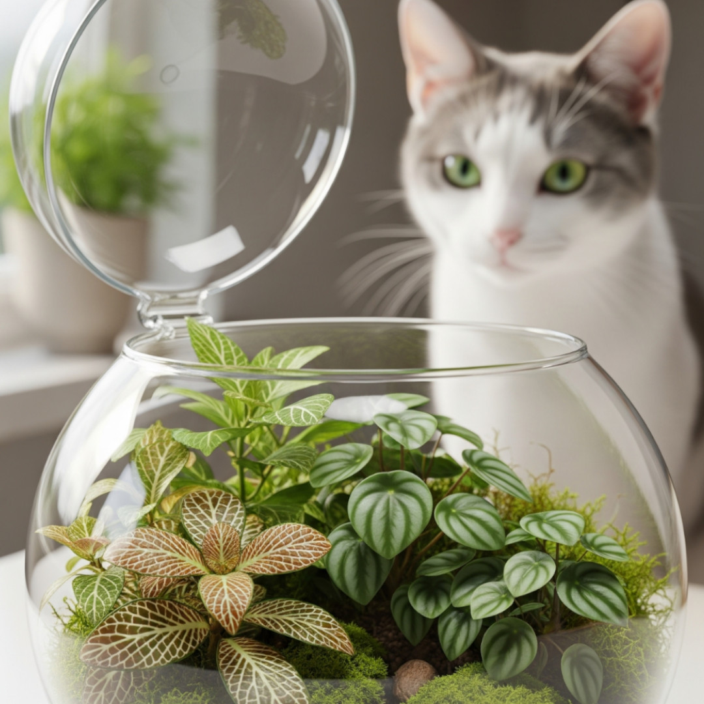

Como fazer um terrário seguro para gatos
Os terrários são uma tendência crescente na decoração — pequenos jardins vivos que cabem em qualquer cantinho. Mas quem tem gatos sabe: tudo o que é novo e verde vira alvo de curiosidade felina.
Neste post, vamos mostrar como montar um terrário bonito, funcional e 100% seguro para seu gato.
🌿 1. Escolha bem as plantas
Evite espécies tóxicas como Espada-de-São-Jorge, Hera, Cactos com espinhos ou Lírios.
Prefira plantas como:
- ✔️ Fitônia
- ✔️ Peperômia
- ✔️ Clorofito (Gravatinha)
- ✔️ Musgos naturais
- ✔️ Mini Marantas
🐾 Dica: Terrários abertos são melhores para ambientes com pets — oferecem ventilação e evitam o acúmulo de fungos.
🪵 2. Monte a base do terrário com camadas
Para garantir drenagem e evitar o apodrecimento das raízes, siga esta ordem:
- 🪨 Pedrinhas (drenagem)
- 🖤 Carvão ativado (evita odores e fungos)
- 🧵 Manta de drenagem (opcional)
- 🌱 Substrato leve e aerado
🧴 3. Evite excesso de água
Terrários precisam de muito pouca rega. Com o excesso de umidade, há risco de fungos, mofo e atração de insetos, o que pode ser perigoso para os gatos.
💡 Dica: Pulverize apenas quando o substrato estiver completamente seco.
🧱 4. Fixe bem os elementos decorativos
Pedras soltas, galhos, miniaturas e vidros devem estar firmemente colocados. Gatos adoram bater patinhas nos elementos.
- ✔️ Use cola quente atóxica se necessário
- ❌ Não inclua peças pequenas que possam ser engolidas
🌤️ 5. Escolha o local ideal na casa
Prefira locais com:
- 🌞 Luz indireta
- 🚫 Fora da rota principal dos gatos
- 🪟 Superfícies firmes, longe da borda de móveis
🐱 Pro-tip: Posicione perto de uma planta de verdade que já chama mais a atenção do seu gato — ele vai se distrair com ela.
🎯 Conclusão
Com atenção aos detalhes, é possível ter um terrário deslumbrante e, ao mesmo tempo, manter seu pet em segurança. Afinal, estética e bem-estar podem (e devem!) coexistir.
← Voltar para o blog